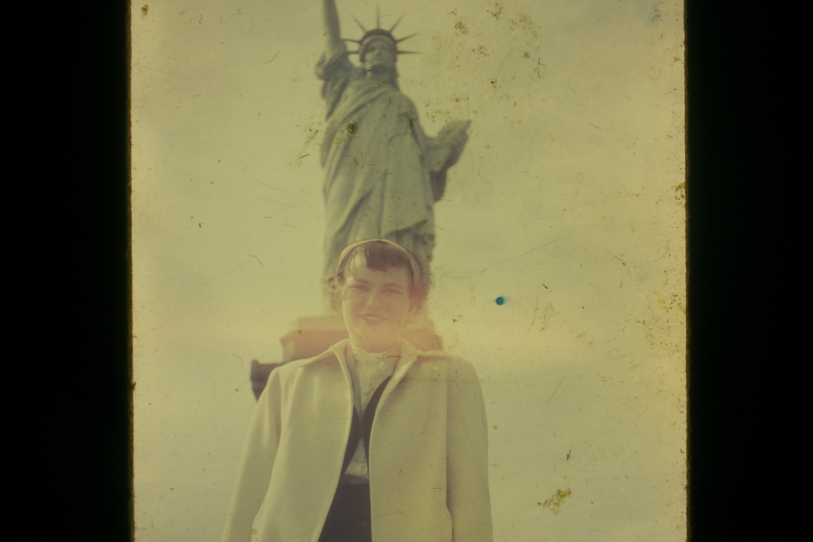
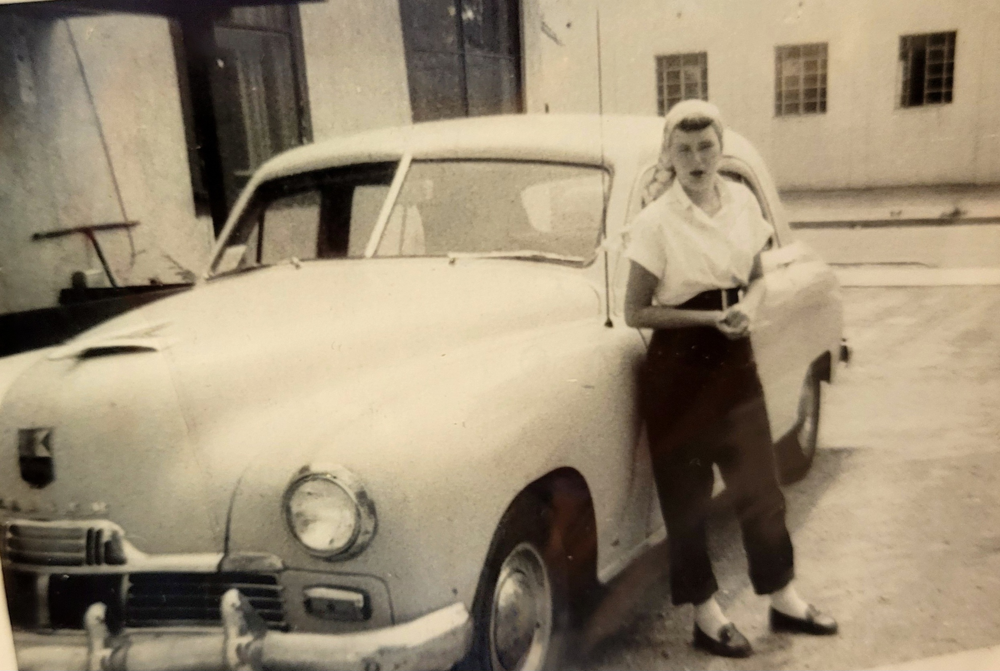
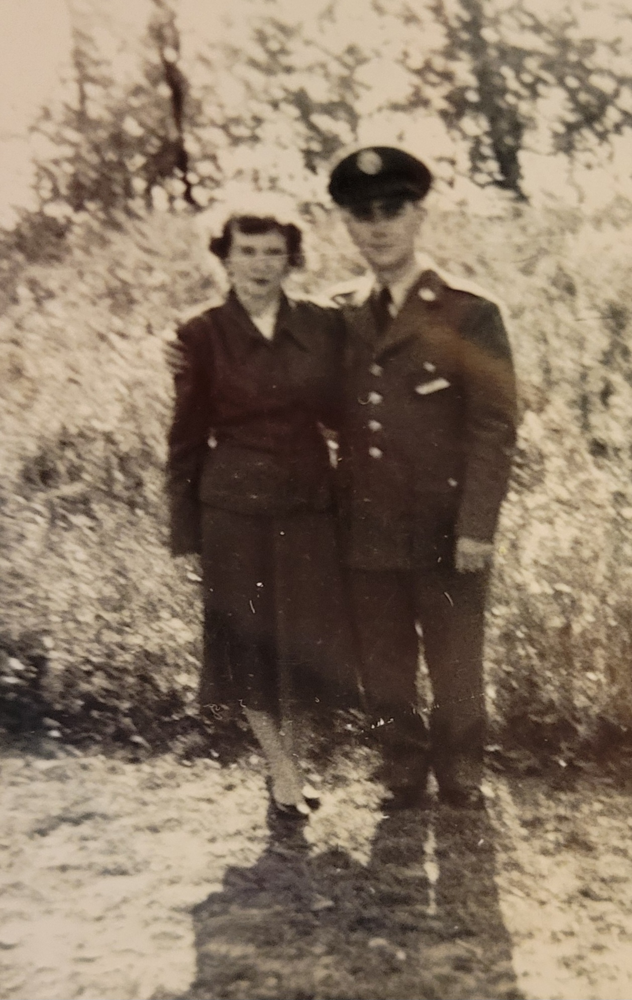
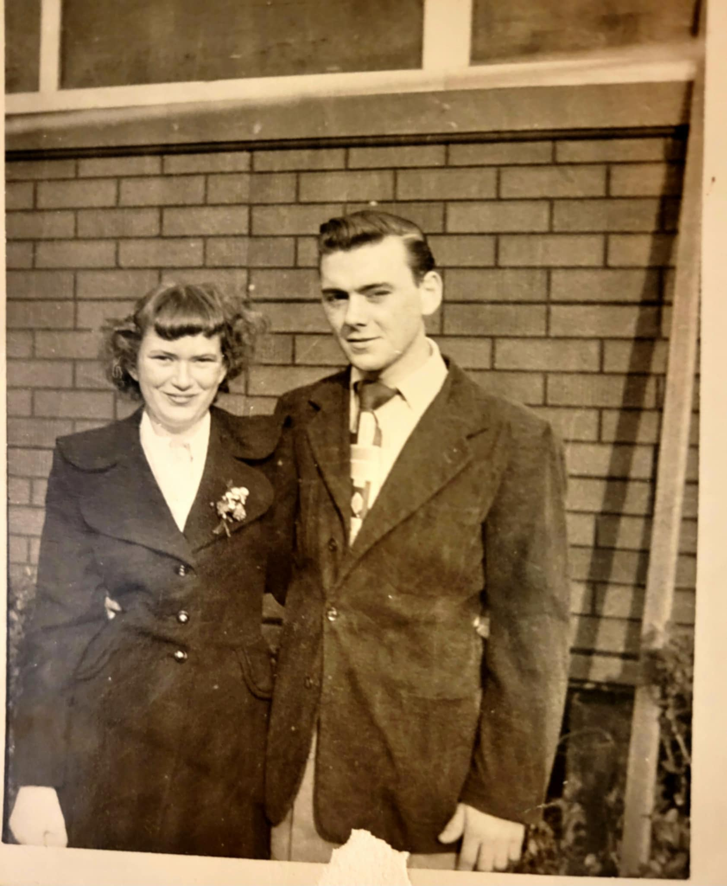

Mary Veronica Bannon (née Miles) was born on January 7, 1934, in Philadelphia, Pennsylvania, to Charles and Louise (Coralus) Miles. She was preceded in death by her beloved husband, John Bannon, Sr.; her son Joseph; her granddaughter, Renee Bannon; Elizabeth Bannon; her parents; and several siblings.
When Mary met her true love and soulmate, the late John Bannon, her life changed in profound ways. She became a devoted military wife, living briefly in New Mexico, where she welcomed her first son. After time spent in a small apartment, Mary and John purchased the home on Guyer Avenue in Southwest Philadelphia that she would lovingly maintain for nearly seventy years. In her later years, Mary spent the remainder of her life living with her daughter and family in Sussex County, Delaware. Mary is survived by her children: John Bannon (Sherry Smith), Deborah Mack (Joseph Mack, Sr.), Michael Bannon (Diana Bannon), AnnaLouise Buchanan (Gregory Buchanan), Susan Donovan (William Donovan), and Edward Bannon (Linda Bannon); thirty grandchildren; forty-five great-grandchildren; and two great-great-grandchildren. Mary Bannon loved babies. When holding an infant, her eyes would light up in a way that made the size of her family—across generations—beautifully evident. She also had a deep love for animals and a lifelong commitment to caring for those who could not care for themselves. It was rare to see her without her loyal dog, Ladybug, by her side. Younger generations in her family tell stories of how she made them feel seen and cared for over the years. She did so quietly and gently, without any need for recognition or display. Mary had a special gift for bringing her family together, even through reluctant teenage years and the busyness of adult life. For that gift, and for the steady love she gave so freely, her family will always be grateful. May we carry these gifts forward in her memory.

Cherished memories of Mary

Mary and John sharing a joyful moment together during the holiday season. Their warmth and happiness shine through in this cherished memory.

A tender moment between Mary and John during Christmas, capturing the deep love and devotion they shared throughout their lives together.

Mary visiting the Statue of Liberty in New York. A beautiful memory from one of her travels.

Young Mary standing proudly beside the family car during their time in military housing. A glimpse into her early years as a devoted military wife.

Mary and John together during his military service. This photograph captures a special moment from their early years as husband and wife.

Mary and John dressed for a special occasion. Mary wears a corsage, marking what was surely a memorable day in their lives together.